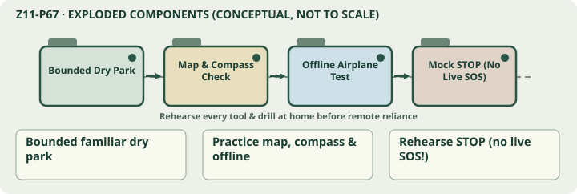

Z11-P67 · Navigation, weather and rescue · Adapted historical material
Conduct dry-land navigation and signaling drills safely before remote trips
Build reliable map, compass, offline-app and signaling habits in bounded familiar parks before relying on them in emergencies.
When it applies · Pre-trip practice for individuals, families and youth groups on known dry-land trails.
Equipment · Paper map, baseplate compass, offline phone map, whistle and bounded local park with clear perimeter roads.

Actions
- Run a dry-land map-and-compass rehearsal at a local park with obvious paved boundaries: practice orienting the map, taking a bearing to a known picnic shelter, measuring pace count and testing offline map tiles in airplane mode.[E01, E02, N08]
- Rehearse the group's lost-person drill calmly (STOP reset, whistle stop signal, Point Last Seen marking, six-item 911 script) WITHOUT placing real emergency calls or triggering live PLB/SOS alerts.[N09, N05, E11]
- Debrief any confusion honestly at home—discovering a reversed declination habit or forgotten glasses in a city park costs nothing compared to a freezing forest.[T08, E02, ED]
Failure recognition · Unboxing a brand-new baseplate compass, satellite messenger and offline mapping app for the very first time in the trailhead parking lot.[E02, N05, N08]
Verify · Confirm every participant successfully reads the map scale, opens offline tiles without signal and recites the group's lost-person stay-put rule.[E02, N01, E11, ED]
Stop or change course · Never send live 911 texts, fire flares or press live SOS/PLB buttons during practice drills; use manufacturer self-test modes only where specified.[N05, T02]
Evidence and editorial notes
- E01 · Minnesota DNR · Safety in State Forests (current web edition)
- Section: Before your trip and while visiting · Conditions: State-forest travel and backcountry planning
Support: Know the route, check conditions, carry navigation and safety equipment and share trip details.
Limitations: Conditions and trail maintenance vary seasonally across forest units. · Conflicting evidence: None; aligns with NPS-H.
Editorial note: Foundation for trip planning and pre-departure risk checks. · Specialist reviewer: Land management and search and rescue
Primary source · checked 2026-11-24 - E02 · NPS · Ten Essentials (current web edition)
- Section: Navigation; insulation; emergency shelter; emergency food and water · Conditions: Outdoor trips; adjust kit to season and route
Support: Carry essential systems including navigation, insulation, light, water and emergency shelter.
Limitations: Carrying items without practice or cold-weather verification does not ensure readiness. · Conflicting evidence: None; baseline kit system architecture.
Editorial note: Supports failure-mode packing and kit verification cards. · Specialist reviewer: Field education and search and rescue
Primary source · checked 2026-11-24 - E11 · NPS · Hike Smart (current web edition)
- Section: Plan your hike; Stay together · Conditions: Groups on hiking routes
Support: Choose a route suited to the group's abilities and hike at a pace that keeps the group together.
Limitations: Fast hikers moving ahead at junctions is a leading driver of preventable separation. · Conflicting evidence: None; aligns with SAR prevention principles.
Editorial note: Core reference for group accountability and pacing cards. · Specialist reviewer: Group leaders and search and rescue
Primary source · checked 2026-11-24 - N01 · USGS · US Topo Maps for America (current web edition)
- Section: US Topo Maps > Coordinate Grids, Scale and Currency · Conditions: Map reading and trip planning in the United States
Support: USGS topographic maps provide elevation contours, hydrography, roads, land cover and scale/date metadata; check publication date because trails, roads and structures change over time.
Limitations: Historical topo sheets (such as 1965 Ely quadrangle) illustrate symbols only and never establish current routes or declination. · Conflicting evidence: None; aligns with USGS-MAP-R and NOAA-D.
Editorial note: Grounds map margin, scale, date and historical-excerpt limits in Z11. · Specialist reviewer: Cartography and navigation
Primary source · checked 2026-11-24 - N05 · NOAA SARSAT · Frequently Asked Questions (Current web edition)
- Section: Emergency beacon types and registration · Conditions: Emergency satellite distress signaling (406 MHz PLBs and EPIRBs)
Support: A 406 MHz distress beacon transmits into the Cospas-Sarsat system. Verify country code, registration and model capabilities separately.
Limitations: PLBs are one-way distress alerts only (no two-way texting), require clear sky view and must be reserved for grave and imminent danger. · Conflicting evidence: Distinguishes one-way 406 MHz PLBs from commercial two-way satellite messengers.
Editorial note: Anchors beacon selection, sky-view limits and registration cards in Z11. · Specialist reviewer: Search and rescue and emergency communications
Primary source · checked 2026-11-24 - N08 · NOAA NCEI · Magnetic Declination (current web edition)
- Section: NOAA Magnetic Declination > definition and true-bearing conversion · Conditions: Using magnetic baseplate compasses near metal, electronics or iron-rich rock
Support: Declination is between true and magnetic north and varies by location and time. Grid convergence is separate. A device may already apply a correction.
Limitations: NOAA definition does not establish site-specific interference distances or diagnosis of magnetic anomalies. · Conflicting evidence: Aligns with B014-P13 and B014-P14.
Editorial note: Grounds declination conversion, metal-clearance and magnetic-anomaly cards. · Specialist reviewer: Navigation and geophysics safety
Primary source · checked 2026-11-24 - N09 · NPS · Outdoor Emergency Plan (current web edition)
- Section: If You Get Lost; Seek help · Conditions: Lost hiker who cannot safely retrace steps and has sought rescue
Support: Report last known location and landmarks. Stay put while awaiting help unless an immediate threat requires getting to safety.
Limitations: Navigation, signaling method and safe movement depend on site and responder instructions. · Conflicting evidence: See A02 claim audit for boundaries.
Editorial note: Core evidence for lost-person psychology, signaling and SAR coordination cards. · Specialist reviewer: Search and rescue
Primary source · checked 2026-11-24 - T02 · American Red Cross · First Aid Steps (current web edition)
- Section: First Aid Steps > Call 9-1-1 · Conditions: Lay emergency response to unresponsiveness, abnormal breathing or severe bleeding
Support: Activate EMS and get needed equipment. Follow dispatcher directions and act within training.
Limitations: Remote locations may delay EMS arrival, requiring sustained stabilization after activation. · Conflicting evidence: None; aligns with NPS-E.
Editorial note: Mandates early emergency activation and dispatcher adherence. · Specialist reviewer: EMS and wilderness medicine
Primary source · checked 2026-11-24 - T08 · NOAA NCEI · Magnetic Declination (current web edition)
- Section: Definition and bearing conversion · Conditions: Trip planning with a map and compass
Support: Declination varies by date and geographic position. Determine the map reference and current local value.
Limitations: Outdated map margins can have meaningful declination drift over decades. · Conflicting evidence: None; retained for navigation reconstructions.
Editorial note: Preserved for Z11 continuity. · Specialist reviewer: Navigation and search and rescue
Primary source · checked 2026-11-24
Source lineage · B014 r01 brief and NPS Hike Smart; new manuscript · Classification · Adapted historical material.